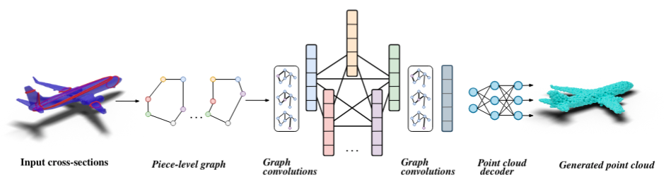

Curvy: A Parametric Cross-section based Surface Reconstruction
Cross-sections with the help of generative modeling. We present a simple learnable approach to generate a large number of points from a small number of input cross-sections over a large dataset. We use a compact parametric polyline representation using adaptive splitting to represent the cross-sections and perform learning using a Graph Neural Network to reconstruct the underlying shape in an adaptive manner reducing the dependence on the number of cross-sections provided.
Our method proposes a novel approach to generate a large number of points from a small number of input cross-sections over a large dataset. We use a compact parametric polyline representation using adaptive splitting to represent the cross-sections and perform learning using a Graph Neural Network to reconstruct the underlying shape in an adaptive manner reducing the dependence on the number of cross-sections provided.Installation
Instructions on how to install and set up the project.
# Clone the repository
git clone https://github.com/graphics-research-group/curvy.git
# Navigate to the project directory
cd curvy
Usage
- Data Preprocessing:
To generate cross-section data download ShapeNetCore.v2 dataset provided here, set the paths in lines 574 where
rootrefers to the path where ShapeNet dataset is downloaded andtargetis the path where the generated data will be stored inData_Prep.pyand runpython Data_Prep.py - Train AE:
Download data from the original PointNet repository here
python ae_paper.py --data_dir /path/to/preprocessed_data - Train GCN:
To train the GCN set the following paths -
- line 962: path to shapenet dataset
- line 963: path to the generate cross-section data
- lines 1011-1012: the path for the autoencoder checkpoint (note: the same path would be used for loading both the encoder and decoder models)
then run -
python gcn.py